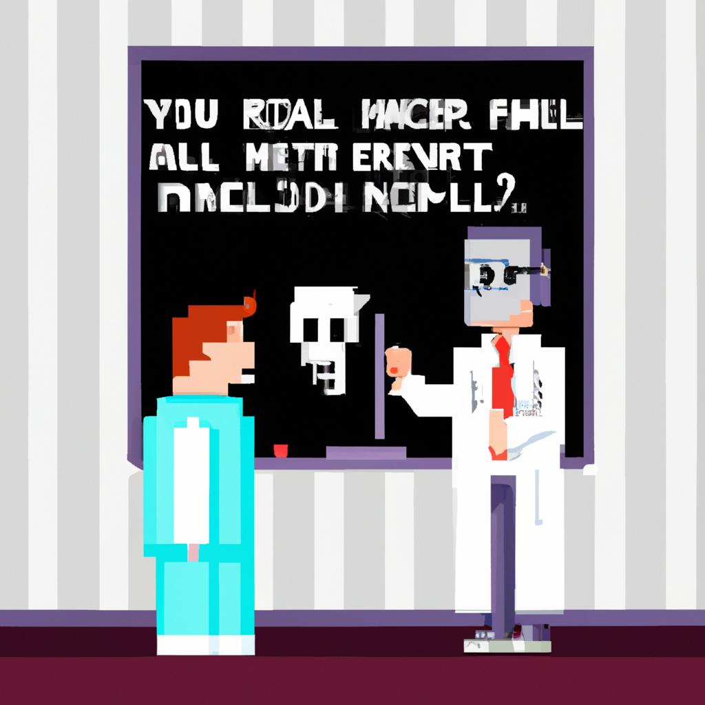

Why AI will never replace the radiologist
As technology advances, AI is becoming increasingly capable of performing tasks that were once thought to be impossible. One such area is the field of radiology, where AI is being used to detect and diagnose medical conditions. However, despite the potential of AI in this field, there are still many reasons why it can never replace the radiologist.
First and foremost, AI simply cannot match the same level of expertise and experience that a radiologist can provide. While AI can detect and diagnose medical conditions, a radiologist’s experience and training can provide an invaluable insight into a patient’s medical history, as well as the ability to recognize subtle signs that AI may not detect.
Secondly, AI cannot replace the human touch and empathy that a radiologist can provide. A radiologist is able to provide a more personal experience for the patient, and can help to provide the comfort and reassurance that can often be missing when dealing with a serious medical condition.
Finally, AI is still limited in its ability to understand the nuances of the human body. While AI can detect patterns in medical images, it is still unable to understand the intricacies of the human body, which a radiologist can recognize and utilize to provide more accurate diagnoses.
In conclusion, while AI has the potential to revolutionize the field of radiology, it will never be able to replace the experience and expertise of a radiologist. AI can provide a valuable tool to help with the diagnosis of medical conditions, but it will never be able to replace the human touch and empathy that a radiologist provides.